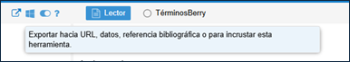
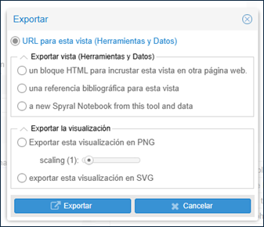
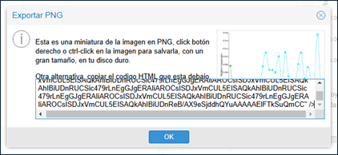

Cómo incorporar Voyant Tools en otros sitios web
Voyant Tools está diseñado para funcionar como un entorno independiente voyant-tools.org o como un conjunto de módulos independientes que pueden ser integrados en otros sitios web. Para obtener un enlace debemos utilizar la función de exportación colocando el cursor sobre la barra gris hasta que aparezca un menú de iconos:

Al hacer clic en el icono Exportar aparece un menú con las siguientes opciones:

- URL para esta vista (Herramientas y Datos)
- Genera una URL para la herramienta y los datos visualizados en ese panel; es la opción predeterminada.
- Exportar Vista (herramientas y datos)
- un bloque HTML para incrustar esta vista en otra página web: genera un fragmento de código HTML, que se puede utilizar para insertar esta sesión de Voyant Tools en una página web.
- una referencia bibliográfica para esta vista: genera la referencia bibliográfica para esta sesión de Voyant Tools.
- a new Spyral Notebook from this tool and data: Spyral Notebook es un entorno de programación construido sobre Voyant Tools y que lo amplía. Para más información sobre Spyral Notebook puede consultarse la guía de ayuda.
- Exportar la visualización:
- exportar esta visualización en PNG: genera una imagen en formato PNG de la herramienta y un fragmento de código HTML que contiene la imagen.
- exportar esta visualización en SVG: : genera una imagen en formato SVG de la herramienta y un fragmento de código HTML que contiene la imagen.
Vamos ahora a generar un bloque HTML en la herramienta Cirrus. Para ello hacemos clic en el icono Exportar y seleccionamos Exportar vista (Herramientas y Datos): un bloque HTML. Debería aparecer una ventana emergente con un fragmento de código HTML que puede utilizarse para insertar la visualización en otro sitio web.

El resultado sería el siguiente panel interactivo: